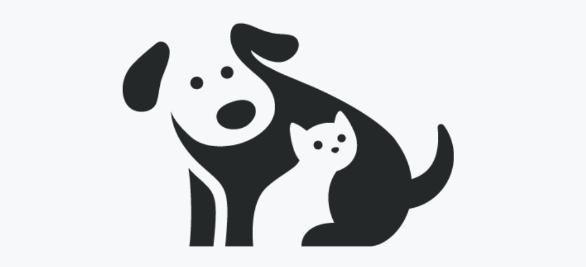

<p-toolbar>
  <button (click)="handleNavigateHome()" class="p-toolbar-group-start cursor-pointer lg:block hidden">
    
    <span>helpa.ws</span>
  </button>
  <div class="block lg:hidden">
    <p-button
      #burgerMenu
      styleClass="p-3"
      [text]="true"
      [raised]="true"
    >
      <i class="pi pi-list"></i>
    </p-button>
  </div>
  <div class="p-toolbar-group-end">
    @if (isLoggedIn && hasPermLevel) {
      <p-button
        #globalSettingsButton
        styleClass="p-3"
        [rounded]="true"
        [text]="true"
        [raised]="true"
        (click)="router.navigate(['global-settings'])"
      >
        <i class="pi pi-cog"></i>
      </p-button>
    }
    @if (isLoggedIn) {
      <ama-notifications></ama-notifications>
      <p-button
        label="Logout"
        icon="pi pi-sign-out"
        class="mr-2 danger-50"
        styleClass="p-button-danger"
        size="small"
        (onClick)="handleLogout()"
      ></p-button>
    } @else {
      <p-button
        label="Login"
        icon="pi pi-sign-in"
        class="mr-2 primary-50"
        styleClass="p-button-warning"
        size="small"
        (onClick)="router.navigate(['signin'])"
      ></p-button>
    }
  </div>
</p-toolbar>
